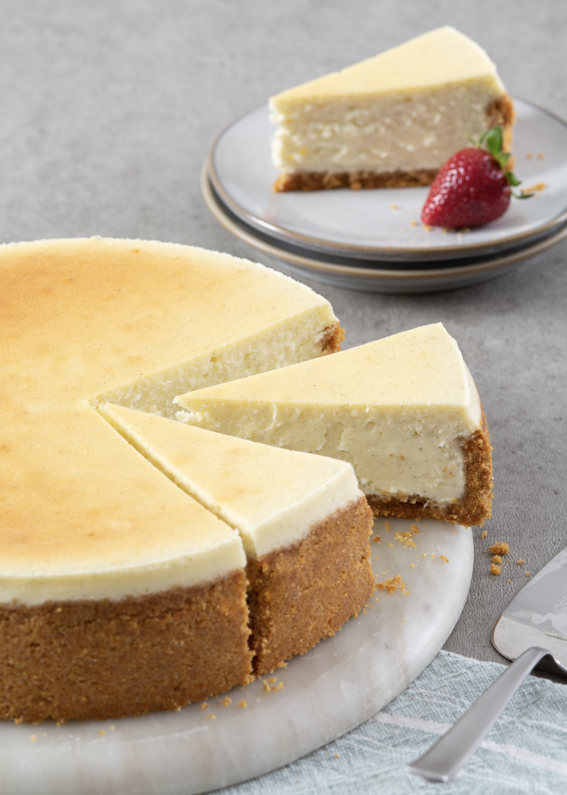

NewYork style Cheesecake

Description
A quick easy recipe for this newyork styleed treat.
Ingredients
- 3 tablespoons melted butter
- 18 graham crackers, crushed
- ¼ cup all-purpose flour
- 1 cup sour cream
- 1 tablespoon vanilla extract
- 4 (8 ounce) packages cream cheese
- 1 ½ cups white sugar
- ⅔ cup milk
- 4 eggs
- 1 teaspoon finely grated lemon zest
- 1 teaspoon finely grated orange zest
Steps
- Preheat oven to 350 degrees F (175 degrees C).
- Lightly grease the bottom and sides of a 9-inch springform pan.
- Mix graham cracker crumbs and melted butter in a bowl until evenly moistened. Press crumb mixture into the bottom and about 1/2-inch up the sides of the springform pan.
- Whisk flour, sour cream, and vanilla extract in bowl. Set aside.
- Stir cream cheese and sugar with a wooden spoon in a large bowl until evenly incorporated, 3 to 5 minutes.
- Pour milk into cream cheese mixture and whisk until just combined.
- Whisk in eggs, one at a time, stirring well after each addition.
- Stir in lemon zest, orange zest, and sour cream mixture; whisk until just incorporated.
- Pour mixture into prepared springform pan.
- Bake in the preheated oven until the edges have nicely puffed and the surface of the cheesecake is firm except for a small spot in the center that will jiggle when the pan is gently shaken, about 1 hour.
- When the cheesecake is done, turn off the oven and let it cool in the oven for 3 to 4 hours. This prevents any cracks from forming on the top of the cheesecake.